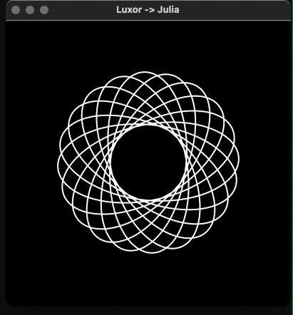
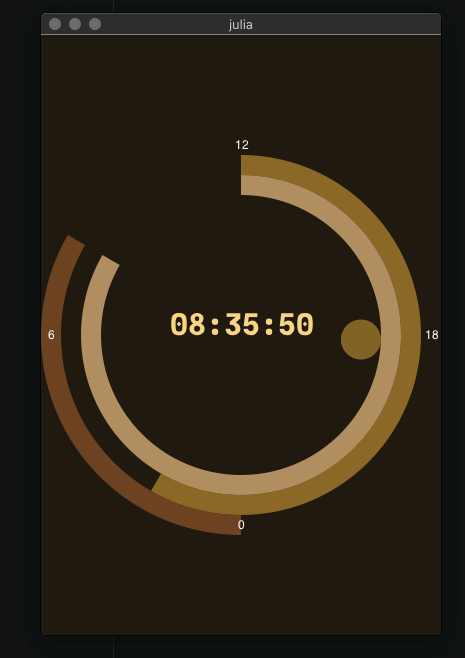
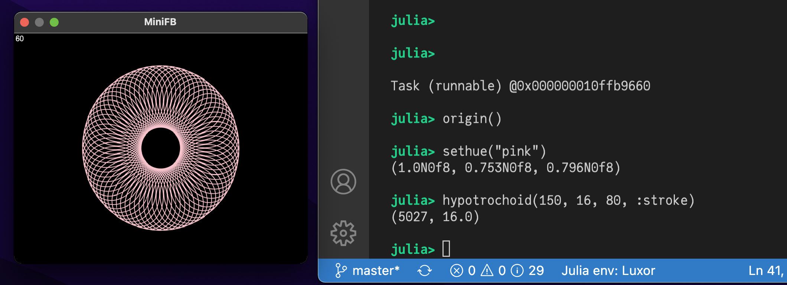
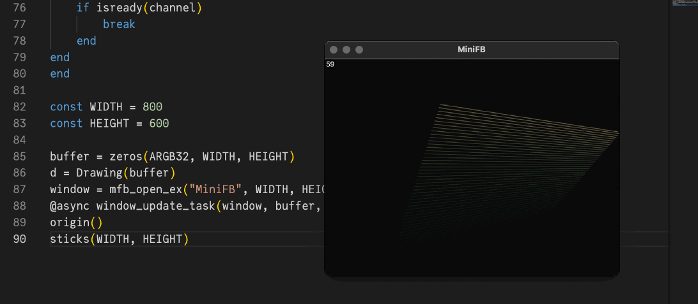
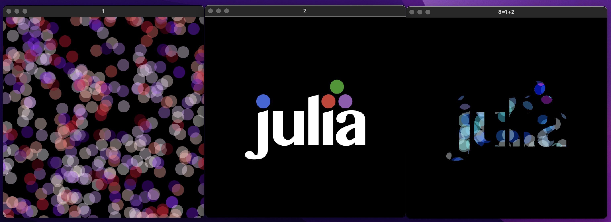
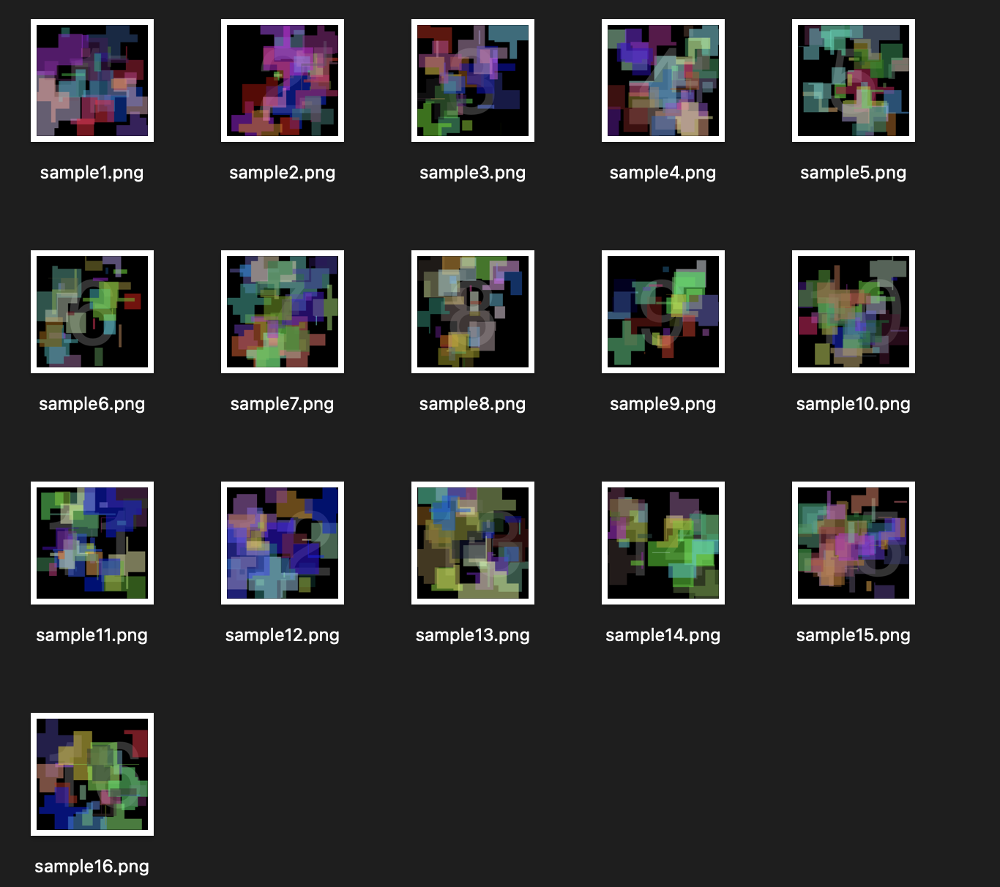

Interactive graphics and Threads
Continuous display
With the help of an external appication to manage windows, it's possible to use Luxor to create continuously changing graphics in a window.
The @play macro
This example uses the MiniFB package, which you can add using ] add MiniFB.
The file play.jl defines a simple macro, @play, which continuously evaluates and draws the graphics in a window. For example, this code:
using Luxorinclude(dirname(pathof(Luxor)) * "/play.jl")let θ = 0 @play 400 400 begin # background("black") sethue("white") rotate(θ) hypotrochoid(200, 110, 37, :stroke) θ += π/120 sleep(0.01) # endenddraws a continuously rotating hypotrochoid.

Clock
This code also imports the @play macro.
The call to sleep reduces the CPU time, and allows other processes to run, but the millisecond animation will be less smooth as a result.

using Luxor, Colors, Dates, ColorSchemesinclude(dirname(pathof(Luxor)) * "/play.jl")function clock(cscheme=ColorSchemes.leonardo) @play 400 600 begin # background sethue(get(cscheme, .0)) paint() # 24hour sector fontsize(30) sethue(get(cscheme, .2)) h = Dates.hour(now()) sector(O, 180, 200, π/2, π/2 + rescale(h, 0, 24, 0, 2pi), :fill) @layer begin fontsize(12) sethue("white") @. text(["0", "6", "12", "18"], polar(190, [i * π/2 for i in 1:4]), halign=:center, valign=:middle) end # minute sector sethue(get(cscheme, .4)) m = Dates.minute(now()) sector(O, 160, 180, 3π/2, 3π/2 + rescale(m, 0, 60, 0, 2pi), :fill) # second sector sethue(get(cscheme, .6)) s = Dates.second(now()) sector(O, 140, 160, 3π/2, 3π/2 + rescale(s, 0, 60, 0, 2pi), :fill) # millisecond indicator @layer begin setopacity(0.5) sethue(get(cscheme, .8)) ms = Dates.value(Dates.Millisecond(Dates.now())) circle(polar(120, 3π/2 + rescale(ms, 0, 1000, 0, 2pi)), 20, :fill) end # central text fontface("JuliaMono-Black") sethue(get(cscheme, 1.0)) text(Dates.format(Dates.now(), "HH:MM:SS"), halign=:center) sleep(0.05) endendclock(ColorSchemes.klimt)Live coding with MiniFB
Here are some examples of how to use Luxor with MiniFB as the display window, without using the simple @play macro.
Interactivity
This example lets you type graphic commands at the REPL and see the results instantly displayed in a window.
First, run this code to connect a Luxor drawing to a MiniFB buffer:
using Luxorusing Colorsusing MiniFBfunction window_update_task(window, buffer, showFPS=false) state = mfb_update(window, buffer) updateCount = 0 startTime = floor(Int, time()) fps = "0" while state == MiniFB.STATE_OK if showFPS elapsedTime = floor(Int, time()) - startTime if elapsedTime > 1 fps = string(round(Int, updateCount / elapsedTime)) startTime = floor(Int, time()) updateCount = 0 end @layer begin setcolor("black") circle(boxtopleft() + (15, 15), 15, :fill) setcolor("white") fontsize(20) text(fps, boxtopleft() + (15, 15), halign=:center, valign=:middle) end end state = mfb_update(window, buffer) sleep(1.0 / 120.0) updateCount += 1 end println("\nWindow closed\n")endconst WIDTH = 800const HEIGHT = 600buffer = zeros(ARGB32, WIDTH, HEIGHT)d = Drawing(buffer)window = mfb_open_ex("MiniFB", WIDTH, HEIGHT, MiniFB.WF_RESIZABLE)@async window_update_task(window, buffer, true)Now, the window will display the results of any expressions you type at the REPL:

Live animations
If you want to do live animations in the window in a "while" loop, you need to call sleep() for a while to allow the window_update_task() to get some execution time.
In this example you can enter "q" and "return" in the REPL to stop the animation's while loop. Using "ctrl-c" to stop the animation could also stop the window update task by chance.

Code for this example
mutable struct Ball position::Point velocity::Pointendfunction sticks(w, h) channel = Channel(10) #enter "q" and "return" to stop the while loop @async while true kb = readline(stdin) if contains(kb, "q") put!(channel, 1) break end end colors = [ rand(1:255), rand(1:255), rand(1:255) ] newcolors = [ rand(1:255), rand(1:255), rand(1:255) ] c = ARGB(colors[1]/255, colors[2]/255, colors[3]/255, 1.0) balls = [ Ball( rand(BoundingBox(Point(-w/2, -h/2), Point(w/2, h/2))), rand(BoundingBox(Point(-10, -10), Point(10, 10))) ) for _ in 1:2 ] while true background(0, 0, 0, 0.05) if colors == newcolors newcolors = [ rand(1:255), rand(1:255), rand(1:255) ] end for (index, (col, newcol)) in enumerate(zip(colors, newcolors)) if col != newcol col > newcol ? col -= 1 : col += 1 colors[index] = col end end c = ARGB(colors[1]/255, colors[2]/255, colors[3]/255, 1.0) for ball in balls if !(-w/2 < ball.position.x < w/2) ball.velocity = Point(-ball.velocity.x, ball.velocity.y) end if !(-h/2 < ball.position.y < h/2) ball.velocity = Point(ball.velocity.x, -ball.velocity.y) end ball.position = ball.position + ball.velocity end setcolor(c) line(balls[1].position, balls[2].position, :stroke) sleep(1.0/120.0) if isready(channel) break end endendorigin()sticks(WIDTH, HEIGHT)Interactive graphics with multiple drawings
This next example shows how to work with multiple drawings. We'll create three windows, then combine (AND) the contents of the first two and display them in the third.

First, we'll setup our display buffers and MiniFB windows, one for each Luxor drawing:
using MiniFB, Luxor, Colors, FixedPointNumbersWIDTH = 500HEIGHT = 500function window_update_task(window,buffer) state = mfb_update(window,buffer) while state == MiniFB.STATE_OK state = mfb_update(window, buffer) sleep(1.0/120.0) end println("\nWindow closed\n")endwindow1 = mfb_open_ex("1", WIDTH, HEIGHT, MiniFB.WF_RESIZABLE)buffer1 = zeros(ARGB32, WIDTH, HEIGHT)@async window_update_task(window1,buffer1)window2 = mfb_open_ex("2", WIDTH, HEIGHT, MiniFB.WF_RESIZABLE)buffer2 = zeros(ARGB32, WIDTH, HEIGHT)@async window_update_task(window2,buffer2)window3 = mfb_open_ex("3=1+2", WIDTH, HEIGHT, MiniFB.WF_RESIZABLE)buffer3 = zeros(ARGB32, WIDTH, HEIGHT)@async window_update_task(window3,buffer3)Buffers 1, 2, and 3 are the buffers for the three MiniFB windows. They'll appear on your display.
Next we'll create three Luxor drawings that connect to these buffers.
d1 = Drawing(buffer1)Luxor._set_next_drawing_index()d2 = Drawing(buffer2)Luxor._set_next_drawing_index()d3 = Drawing(buffer3, "julia.png")We now have three drawings which are continuously updated and visible in three separate windows. Let's start by drawing on drawing 1.
Luxor._set_drawing_index(1)origin()setopacity(0.4)foregroundcolors = Colors.diverging_palette( rand(0:360), rand(0:360), 200, s=0.99, b=0.8)gsave()for i in 1:500 sethue(foregroundcolors[rand(1:end)]) circle(Point(rand(-300:300), rand(-300:300)), 15, :fill)endgrestore()Now let's switch to drawing 2 and draw the Julia logo:
Luxor.set_drawing_index(2)origin()setopacity(1.0)gsave()julialogo(centered=true, bodycolor=colorant"white")grestore()Finally, we'll switch to drawing 3, and set its contents by ANDing the buffers of drawings 1 and 2:
Luxor.set_drawing_index(3)background("black")buffer3 .= reinterpret(ARGB{N0f8}, (reinterpret.(UInt32,buffer1) .& reinterpret.(UInt32,buffer2)))To finish, we'll set the opacity of each pixel to 1.0:
buffer3.=ARGB32.(RGB24.(buffer3))finish()preview()Threads
Luxor is thread safe. To run the examples below, start Julia with more than 1 thread. To see how many threads you have available, ask Julia:
julia> Threads.nthreads()4As a first example, we'll produce multiple PNG files in parallel:
using Luxor # hidetempdir = mktempdir(; cleanup=false)cd(tempdir)function make_drawings(i::Int) println("Working on thread ", Threads.threadid()) w = 300 h = 300 filename = "sample" * string(i) * ".png" Drawing(w, h, filename) origin() background("black") setopacity(0.5) fontsize(250) sethue("grey40") text(string(i), halign=:center, valign=:middle) for k in 1:50 pg1 = polycross(rand(BoundingBox()), rand(60:120), 4, vertices=true) pg2 = polycross(rand(BoundingBox()), rand(60:120), 4, vertices=true) pg3 = polyintersect(pg1, pg2) for p in pg3 randomhue() poly(p, :fill) end end finish() returnendThreads.@threads for i = 1:(2*Threads.nthreads()) make_drawings(i)endWorking on thread 2
Working on thread 3
Working on thread 4
Working on thread 2
Working on thread 1
Working on thread 3
Working on thread 1
Working on thread 4
Advanced threads with live view
To demonstrate what is possible, we again show live graphics in MiniFB windows, but this time in different threads.
There are two ways to use threads with Luxor.
One way is to use a single thread for each window we want to show, i.e each window we spawn and the Luxor graphics inside is a different thread.
The other way to use threads is e.g. a single window, with several threads all drawing into the same buffer, which is shown in the single window. For this you need to utilize locks as shown in the second example below.
A thread for each window
First, here's an example where each window and its graphics is a single thread. No locks or channels are needed.
Let's start with the header and a helper function for our animation:
using ThreadPools# the low level Threads.@spawn macro can not be used, because threads are scheduled# randomly into available threadids. If a thread is spawned into an already running# threadid, the former thread # is closed by the scheduler. So we use the better# ThreadPools.spawnbg to spawn the threads.using MiniFB, Luxor, Colors, FixedPointNumbersmutable struct Ball position::Point velocity::Pointendfunction step_ball(ball, w, h, r) if ball.position.x - r < -w / 2 || ball.position.x + r > w / 2 ball.velocity = Point(-ball.velocity.x, ball.velocity.y) end if ball.position.y - r < -h / 2 || ball.position.y + r > h / 2 ball.velocity = Point(ball.velocity.x, -ball.velocity.y) end ball.position = ball.position + ball.velocity return ballendOpen and run the first window in its own thread:
function window_ball() w = 500 h = 500 r = 50 buffer = zeros(RGB24, w, h) ball = Ball(Point(0, 0), rand(BoundingBox(Point(-10, -10), Point(10, 10)))) Drawing(buffer) origin() window = mfb_open_ex("Ball", w, h, MiniFB.WF_RESIZABLE) state = MiniFB.STATE_OK while state == MiniFB.STATE_OK ball = step_ball(ball, w, h, r) background(0.0, 0.0, 0.0, 1.0) setcolor("red") circle(ball.position.x, ball.position.y, r, :fill) state = mfb_update(window, buffer) sleep(1.0/120.0) end println("\nWindow closed\n")endspawnbg(window_ball)Open and run a second window in its own thread:
function window_stick() w = 500 h = 500 r = 0 buffer = zeros(RGB24, w, h) balls = [Ball(rand(BoundingBox(Point(-w/2, -h/2), Point(w/2, h/2))), rand(BoundingBox(Point(-10, -10), Point(10, 10)))) for _ in 1:2] Drawing(buffer) origin() background(0.0,0.0,0.0,1.0) window = mfb_open_ex("Sticks", w, h, MiniFB.WF_RESIZABLE) state = MiniFB.STATE_OK while state == MiniFB.STATE_OK background(0.0, 0.0, 0.0, 0.05) setcolor("green") for ball in balls ball=step_ball(ball, w, h, r) end line(balls[1].position, balls[2].position, :stroke) state=mfb_update(window, buffer) sleep(1.0/120.0) end println("\nWindow closed\n")endspawnbg(window_stick)If you have threads left you can start another thread with a third window:
spawnbg(window_stick)If you run out of threadids, the command spawnbg(window_stick) will block the REPL until a thread is freed, e.g. by closing one of the windows.
A single window with graphics of several threads
The next example shows a single window/buffer where several threads are drawing into it. This needs some extra caution by utilizing locks, because every thread uses the same drawing buffer. Therefore all drawing commands needs to be synchronized with lock/unlock:
using ThreadPoolsusing MiniFB, Luxor, Colorsstruct Window c::ReentrantLock w::Int h::Int d::Drawing buffer::Matrix{ARGB32} function Window(w,h) c = ReentrantLock() b = zeros(ARGB32, w, h) d = Drawing(b) origin() new(c,w,h,d,b) endendfunction window_update_task(win::Window, showFPS=true) w = win.w h = win.h updateCount = 0 startTime = floor(Int, time()) fps = "0" sb = zeros(ARGB32, 105, 55) window = mfb_open_ex("MiniFB", w, h, MiniFB.WF_RESIZABLE) state=MiniFB.STATE_OK set_drawing = true while state == MiniFB.STATE_OK lock(win.c) if set_drawing currentdrawing(win.d) set_drawing = false end if showFPS elapsedTime=floor(Int,time())-startTime if elapsedTime > 1 fps=string(round(Int,updateCount/elapsedTime)) startTime=floor(Int,time()) updateCount=0 end sb.=win.buffer[1:105, 1:55] @layer begin (dx,dy) = Point(0.0, 0.0) - getworldposition(Point(0.0, 0.0);centered=false) setcolor(1.0, 0, 0, 0.5) fontsize(50) text(fps, Point(5+dx, 5+dy), halign=:left, valign = :top) end end state=mfb_update(window,win.buffer) if showFPS win.buffer[1:105, 1:55].=sb end background(0, 0, 0, 0.05) unlock(win.c) sleep(1.0/120.0) updateCount+=1 end println("\nWindow closed\n")endThat's all we need to define a window with a fps display. Let's define it and run it as a new thread:
win = Window(800, 600) # the window definition# we need a function without parameter, that's what we create here:let window=win global t_window_update_task function t_window_update_task() window_update_task(window) endend# run the task as a new thread:spawnbg(t_window_update_task)The window with a FPS display shows up. It runs in its own thread so we can still use the REPL to create new threads which draw into this window. The most important special code here is:
currentdrawing(win.d)We start a new thread for every drawing and because the Luxor drawings of different threads are separated from each other to ensure thread safety, we overwrite the drawing in each thread with the drawing started with
win=Window(800, 600)and stored in the win-object. See the constructor in struct Window.
Let's show it:
mutable struct Ball position::Point velocity::Pointendfunction stick(win) w = win.w h = win.h colors = [rand(1:255), rand(1:255), rand(1:255)] newcolors = [rand(1:255), rand(1:255), rand(1:255)] c = ARGB(colors[1] / 255, colors[2] / 255, colors[3] / 255, 1.0) balls = [Ball( rand(BoundingBox(Point(-w / 2, -h / 2), Point(w / 2, h / 2))), rand(BoundingBox(Point(-10, -10), Point(10, 10)))) for _ in 1:2] set_drawing = true while true if colors == newcolors newcolors = [rand(1:255), rand(1:255), rand(1:255)] end for (index, (col, newcol)) in enumerate(zip(colors, newcolors)) if col != newcol col > newcol ? col -= 1 : col += 1 colors[index] = col end end c = ARGB(colors[1] / 255, colors[2] / 255, colors[3] / 255, 1.0) for ball in balls if !(-w / 2 < ball.position.x < w / 2) ball.velocity = Point(-ball.velocity.x, ball.velocity.y) end if !(-h / 2 < ball.position.y < h / 2) ball.velocity = Point(ball.velocity.x, -ball.velocity.y) end ball.position = ball.position + ball.velocity end lock(win.c) if set_drawing currentdrawing(win.d) set_drawing = false end setcolor(c) line(balls[1].position, balls[2].position, :stroke) unlock(win.c) sleep(1.0 / 60.0) endend# again a function for calling without parameter:let window=win global t_stick function t_stick() stick(window) endend# run the thread and let the sticks fly:spawnbg(t_stick)Because our threads are synchronized via lock/unlock we can spawn low-level threads as much as we want and our machine allows:
function spawn_many() tid=1:Threads.nthreads() for i in tid t=Task(t_stick) ccall(:jl_set_task_tid, Cvoid, (Any, Cint), t, i-1) schedule(t) endendNow you can repeat it as much as you dare:
spawn_many()